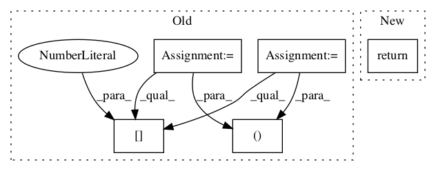

64099a1d2d671705cd9d4a18f9413f4c3569bc86,deepchem/models/tensorgraph/layers.py,NeighborList,get_neighbor_cells,#NeighborList#Any#,3607

Before Change
nbr_cells: tf.Tensor
(n_cells, n_nbr_cells)
ndim, n_cells = self.ndim, self.n_cells
n_nbr_cells = self._get_num_nbrs()
// Tile cells to form arrays of size (n_cells*n_cells, ndim)
// Two tilings (a, b, c, a, b, c, ...) vs. (a, a, a, b, b, b, etc.)
// Tile (a, a, a, b, b, b, etc.)
tiled_centers = tf.reshape(
tf.tile(cells, (1, n_cells)), (n_cells * n_cells, ndim))
// Tile (a, b, c, a, b, c, ...)
tiled_cells = tf.tile(cells, (n_cells, 1))
coords_vec = tf.reduce_sum((tiled_centers - tiled_cells)**2, axis=1)
coords_norm = tf.reshape(coords_vec, (n_cells, n_cells))
closest_inds = tf.nn.top_k(-coords_norm, k=n_nbr_cells)[1]
return closest_inds
def get_cells(self):
After Change
nbr_cells: tf.Tensor
(n_cells, n_nbr_cells)
return self._get_layer(False).get_neighbor_cells(cells)
def get_cells(self):
Returns the locations of all grid points in box.
In pattern: SUPERPATTERN
Frequency: 3
Non-data size: 5
Instances
Project Name: deepchem/deepchem
Commit Name: 64099a1d2d671705cd9d4a18f9413f4c3569bc86
Time:
Author: null
File Name: deepchem/models/tensorgraph/layers.py
Class Name: NeighborList
Method Name: get_neighbor_cells
Project Name: deepchem/deepchem
Commit Name: 64099a1d2d671705cd9d4a18f9413f4c3569bc86
Time:
Author: null
File Name: deepchem/models/tensorgraph/layers.py
Class Name: NeighborList
Method Name: get_cells_for_atoms
Project Name: calico/basenji
Commit Name: 5ba781c281d60ad03d0c8088400a73802dd82d03
Time:
Author: null
File Name: basenji/ops.py
Class Name:
Method Name: per_target_r2